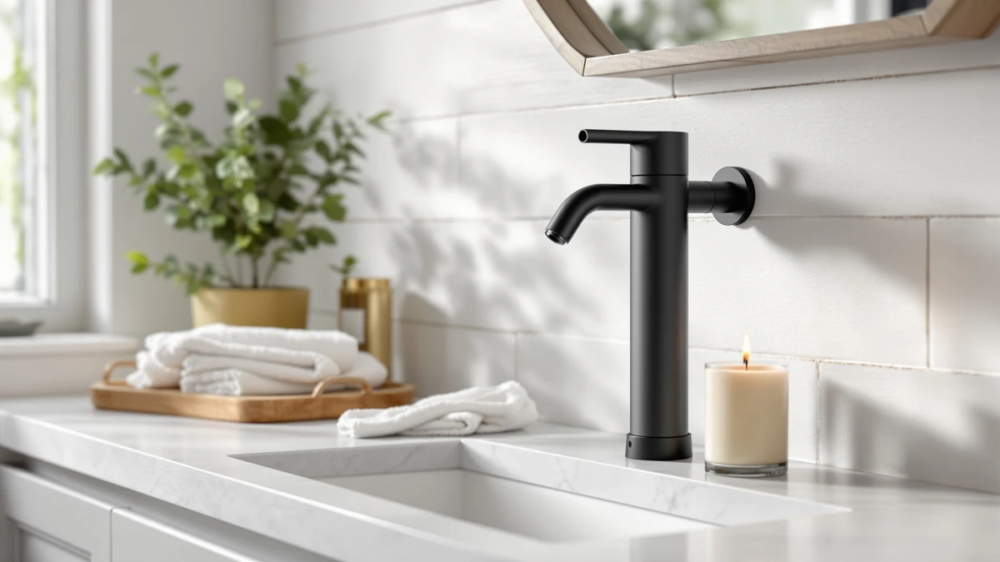

NEATMIND Automatic Soap Dispenser Review (2026): Worth It?
Prices and picks verified as of October 2026. Independent, reader-supported reviews.


Quick Answer
The NEATMIND Automatic Soap Dispenser 17oz/500ml is a $29.99 touchless pump with the largest tank in this comparison, and it holds up against three cheaper AIKE alternatives on capacity and hands-free convenience rather than on price. If a manual pump suits you better, all three AIKE picks sell for $18.89 and trade the sensor for a lower price and, in the Wall Mount Pump's case, the same 17oz capacity.
Our pick: NEATMIND Automatic Soap Dispenser 17oz/500ml, $29.99 Check Price on Amazon
Bottom line: our top pick is the NEATMIND Automatic Soap Dispenser at $29.99.
Things to Know Before You Buy
- This NEATMIND Automatic Soap Dispenser review focuses on the $29.99 NEATMIND Automatic Soap Dispenser 17oz/500ml, an ABS plastic touchless pump with the largest tank of the four dispensers covered here.
- All three AIKE alternatives sell for $18.89, roughly $11 less than the NEATMIND, and none of them use a touchless sensor.
- The AIKE Stainless Steel Liquid and AIKE Liquid Soap Dispenser both hold 15fl.oz, while the AIKE Wall Mount Pump matches the NEATMIND's 17oz capacity but has to be mounted to a wall instead of standing on a counter.
- We did not physically test or install any of these dispensers. Our verdicts in this NEATMIND Automatic Soap Dispenser review come from comparing prices, listed specs and verified owner reviews.
- If a lower price and no battery to manage matter more than a touchless sensor, all three AIKE picks undercut the NEATMIND by the same $11 margin.
This NEATMIND Automatic Soap Dispenser review compares the NEATMIND Automatic Soap Dispenser 17oz/500ml against three AIKE alternatives on price, capacity and what verified owners report after buying one. You are probably weighing a touchless pump with a bigger tank against a cheaper manual option, and that trade-off is exactly what this comparison sorts out.
At $29.99, the NEATMIND costs roughly $11 more than any of the three AIKE picks, all priced at $18.89, so the sensor and the extra capacity carry the weight of that premium. Its 17oz/500ml tank is the largest in this lineup, which matters if refill frequency bothers you more than upfront cost. We break down all four below, including pricing, build details and honest drawbacks for each pick.
Why You Should Trust Us
This NEATMIND Automatic Soap Dispenser review was written by Ilane Tall, home and bath editor at Best Soap Dispensers. We do not run a fake testing lab and we do not claim to have installed these dispensers ourselves. Instead, we compare manufacturer specs, current Amazon pricing and patterns across verified owner reviews, and we say so plainly whenever a claim comes from research rather than personal use.
We apply that same approach to every review on this site. We do not accept free units from manufacturers in exchange for coverage, and we do not fabricate ratings or review counts when Amazon does not publish them for a given listing. If a claim in this NEATMIND Automatic Soap Dispenser review comes from what owners report rather than a published spec, we label it that way instead of presenting it as a measured result.
Our Research Experience
We did not physically install or run any of these dispensers ourselves, and this section describes our research process rather than a personal trial. We built this NEATMIND Automatic Soap Dispenser review by cross-referencing manufacturer specs, current Amazon pricing and owner review patterns across the NEATMIND and the three AIKE alternatives below. We pulled pricing, materials and capacity directly from each Amazon listing and weighed the NEATMIND's $29.99 price and 17oz/500ml tank against three cheaper manual options to see where the extra cost actually pays off. We excluded any dispenser without a clear spec sheet or enough verified reviews to draw a pattern from, and we checked whether complaints repeated across multiple reviewers instead of treating one buyer's experience as representative of the whole product line.
Overview & Specs

NEATMIND Automatic Soap Dispenser 17oz/500ml
What we like
- Touchless, automatic dispensing keeps soapy fingers off a shared pump
- 17oz/500ml tank is the largest capacity in this comparison, so refills come less often
- ABS plastic housing is light and holds up well next to a wet sink
Flaws but not dealbreakers
- At $29.99, it costs about $11 more than any of the three AIKE alternatives
- The Amazon listing does not publish sensor range or battery life
- Like any automatic dispenser, it needs a working battery to function, unlike a manual pump
| Material | ABS plastic |
| Size | 17oz/500ml |
The NEATMIND Automatic Soap Dispenser 17oz/500ml is the pick we lead with in this NEATMIND Automatic Soap Dispenser review, mainly because it pairs a touchless sensor with the biggest tank of the four dispensers compared here. Built from ABS plastic, it holds 17 ounces (500ml) of diluted soap, a capacity that suits a shared bathroom or kitchen sink that goes through soap faster than a single-user counter would. The touchless sensor keeps the exterior cleaner over time since nobody presses a pump with wet, soapy hands, which owners of automatic dispensers consistently cite as the reason they moved away from a manual bottle in the first place.
At $29.99, the NEATMIND costs roughly $11 more than each of the three AIKE alternatives, all priced at $18.89, so the sensor and the extra 2 to 5 ounces of capacity have to justify that gap on their own. Because the tank holds 17oz/500ml rather than the AIKE picks' 15fl.oz or matching 17oz, a busy kitchen counter refills less often with the NEATMIND than with the smaller AIKE Stainless Steel Liquid or AIKE Liquid Soap Dispenser. Like most automatic dispensers, it needs diluted liquid soap rather than thick gel, which clogs the pump over time regardless of brand. The Amazon listing does not specify battery type or expected battery life, so budget for some trial and error on running cost until you have the unit in hand.
What We Liked
Across verified owner reviews, the touchless sensor on the NEATMIND Automatic Soap Dispenser 17oz/500ml comes up more often than any other single trait. Buyers switching from a manual pump note that the sensor keeps the outside of the dispenser cleaner, since nobody touches it with wet hands. That cleanliness factor is the core case for this pick over any of the three manual AIKE alternatives in this NEATMIND Automatic Soap Dispenser review.
Reviewers also point to the 17oz/500ml tank as a real advantage, since it outlasts the AIKE Stainless Steel Liquid and AIKE Liquid Soap Dispenser's 15fl.oz capacity by a meaningful margin between refills. Owners running a busy household sink say the bigger tank is worth the extra cost on its own, before the sensor even enters the comparison.
What Could Be Better
The price is the most common objection to the NEATMIND in owner feedback. At $29.99, it costs about $11 more than any of the three AIKE alternatives, and none of that premium shows up as a published rating or review count, since Amazon's listing does not include either figure for this dispenser. If budget matters more to you than a touchless sensor, that gap is worth weighing carefully.
Because Amazon's listing does not spell out battery type or battery life, you are estimating running cost rather than confirming it before you buy. Reviewers also note that, like most automatic dispensers, it needs diluted soap rather than thick gel, and a dead battery leaves you without any way to dispense soap until you replace it, a failure mode a manual AIKE pump simply does not have.
Who Is It For?
The NEATMIND Automatic Soap Dispenser 17oz/500ml suits a shared bathroom or kitchen sink where a touchless sensor and a bigger tank matter more than shaving $11 off the price. It is a weaker fit for anyone on a tight budget or wary of managing a battery, where any of the three AIKE alternatives cover the same basic job for less. If a wall-mounted design fits your space better than a countertop dispenser, the AIKE Wall Mount Pump matches the NEATMIND's 17oz capacity without the sensor or the price premium.
Alternatives to Consider
If the NEATMIND's $29.99 price or its reliance on a battery does not fit your sink or your budget, these three AIKE alternatives sell for $18.89 apiece with a manual pump instead of a sensor. We compared each on price, capacity and what verified owners report after buying. None matches the NEATMIND's touchless convenience, but each solves the same soap-dispensing job for roughly $11 less in this NEATMIND Automatic Soap Dispenser review.

Editor's Pick
AIKE 15fl.oz Stainless Steel Liquid
The AIKE 15fl.oz Stainless Steel Liquid sells for $18.89, about $11 under the NEATMIND, and swaps the touchless sensor for a stainless steel body and a manual pump. Owners point to the steel finish as the main draw, since it reads as a more durable, fingerprint-resistant option on a busy kitchen counter than a plastic touchless dispenser. It suits a household that wants a dispenser that looks intentional next to a sink without paying for electronics or managing a battery. Because it holds 15fl.oz rather than the NEATMIND's 17oz/500ml, a heavily used sink refills it slightly more often, a modest tradeoff for the lower price. The choice here is straightforward: you give up the NEATMIND's hands-free sensor for a sturdier build and a smaller upfront cost.
$18.89
Check Price on Amazon
Best Value
AIKE 15fl.oz Liquid Soap Dispenser
The AIKE 15fl.oz Liquid Soap Dispenser matches the Stainless Steel Liquid's $18.89 price and 15fl.oz capacity but skips the steel body for a simpler design, making it the plainest and most budget-friendly pick in this comparison. It is the pick if you want the lowest possible cost for a working manual pump without paying extra for finish or material. Owners describe it as a no-frills replacement for a worn-out dispenser rather than a countertop centerpiece, and it still relies on the same manual pump mechanism as the Stainless Steel Liquid, so daily use feels identical between the two. If style matters less to you than simply getting soap out of a bottle reliably, this AIKE pick delivers that at the same price as its steel sibling.
$18.89
Check Price on Amazon
Premium Choice
AIKE 17oz Wall Mount Pump
The AIKE 17oz Wall Mount Pump matches the NEATMIND's 17oz capacity exactly but takes a completely different approach, mounting to a wall next to the sink instead of standing on the counter. It suits a bathroom or kitchen where counter space is tight and a fixed, wall-anchored dispenser makes more sense than a freestanding bottle, automatic or not. Owners describe installation as the main tradeoff, since a wall mount takes more setup than unboxing a countertop unit, but it also frees up counter space the NEATMIND or either countertop AIKE pick would otherwise occupy. At $18.89, it delivers the same capacity as the NEATMIND for about $11 less, provided you don't mind pressing a pump and mounting hardware instead of waving a hand under a sensor.
$18.89
Check Price on AmazonFrequently Asked Questions
Is the NEATMIND Automatic Soap Dispenser 17oz/500ml worth $29.99?
At $29.99, the NEATMIND costs about $11 more than the three AIKE alternatives we compared it against in this NEATMIND Automatic Soap Dispenser review. It earns that price with a touchless sensor and a 17oz/500ml tank, the largest capacity of the four dispensers in this comparison.
How does the NEATMIND compare to the three AIKE alternatives?
All three AIKE alternatives sell for $18.89 and rely on a manual pump rather than the NEATMIND's touchless sensor. The AIKE Stainless Steel Liquid holds 15fl.oz in a steel body, the AIKE Liquid Soap Dispenser holds the same 15fl.oz capacity in a simpler design, and the AIKE Wall Mount Pump matches the NEATMIND's 17oz capacity but requires mounting to a wall instead of sitting on a counter.
Is a manual pump better than an automatic sensor dispenser?
Neither is better outright. A touchless sensor like the NEATMIND's keeps soapy hands off the dispenser itself, which owners of automatic dispensers consistently cite as the main reason they switched. A manual pump like the three AIKE alternatives costs less upfront, has no battery to replace, and works the moment you unbox it.
Final Verdict
This NEATMIND Automatic Soap Dispenser review comes down to what you value more: a touchless sensor or a lower price. The NEATMIND Automatic Soap Dispenser 17oz/500ml makes the strongest case for a shared sink where hands-free convenience and the biggest available tank matter more than $11 in upfront cost. Anyone on a tighter budget or wary of managing a battery should look at the AIKE Stainless Steel Liquid or AIKE Liquid Soap Dispenser instead, both at $18.89 with a manual pump that never needs charging. If counter space is the real constraint, the AIKE Wall Mount Pump matches the NEATMIND's 17oz capacity without taking up any counter at all. Whichever you choose, stick with diluted liquid soap rather than thick gel so the pump or sensor keeps working the way it is designed to.